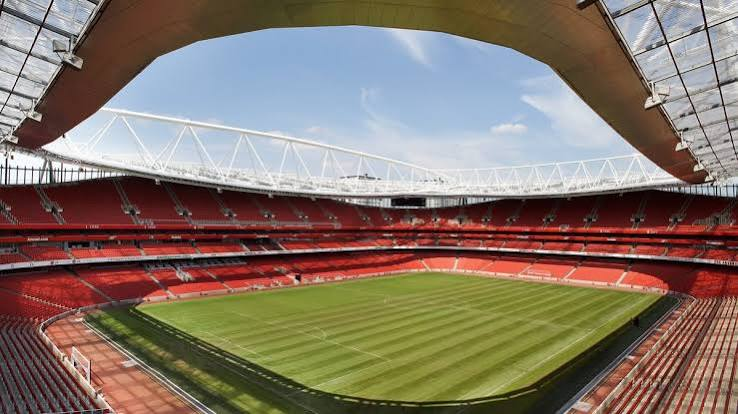
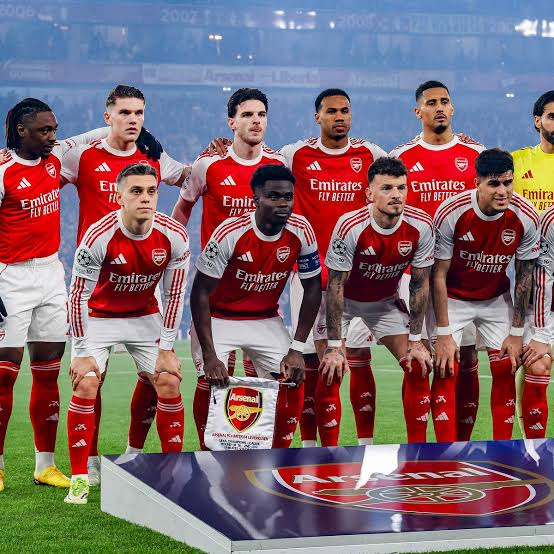

Founded
1886
England
Discover the history, stadium, legendary players, major trophies, records, and interesting facts about Arsenal Football Club.
Introduction
Arsenal is a professional soccer club based in London, England. Founded in 1886, Arsenal has developed into one of the most successful and recognizable clubs in English soccer. The club is famous for its red and white colors, attacking style of play, historic players, and large group of supporters around the world.
Arsenal plays its home matches at Emirates Stadium in North London. The club moved there in 2006 after leaving Highbury, its home for more than 90 years. Emirates Stadium gave Arsenal a larger and more modern home while Highbury remains an important part of the club's history.
Arsenal is commonly known as "The Gunners." The nickname comes from the club's beginnings when it was formed by workers at the Royal Arsenal armaments factory in Woolwich. This history is also represented by the cannon that appears on Arsenal's badge.
Many famous players have represented Arsenal, including Thierry Henry, Dennis Bergkamp, Tony Adams, Patrick Vieira, Ian Wright, Robert Pires, and Cesc Fàbregas. Different generations of Arsenal players have helped the club win championships and create memorable moments in English soccer.

About the Club
Arsenal was founded in 1886 by workers at the Royal Arsenal in Woolwich. The original team was known as Dial Square before becoming Royal Arsenal and later Woolwich Arsenal. The club eventually entered the Football League and began competing professionally.
In 1913, Arsenal moved from Woolwich to Highbury in North London. The move helped the club attract more supporters and established Arsenal in the area that would become its long-term home. The club later dropped "Woolwich" from its name and became known simply as Arsenal.
Arsenal became one of England's strongest teams during the 1930s. Under manager Herbert Chapman and those who continued his work, the club won several league championships and FA Cups. Chapman also helped introduce new ideas involving tactics, training, and the development of the club.
Arsenal continued winning major trophies throughout the following decades. One of the club's most famous championship moments came in 1989 when Arsenal faced Liverpool at Anfield on the final day of the league season. Michael Thomas scored a late goal that helped Arsenal win the league championship in dramatic fashion.
A new era began when Arsène Wenger became Arsenal manager in 1996. Wenger introduced changes to training, nutrition, scouting, and the team's style of play. Arsenal became known for quick passing, technical ability, and attacking soccer during his time as manager.
The 2003-04 season became one of the greatest seasons in Arsenal's history. The team won the Premier League without losing a single league match. Arsenal finished the 38-game season with 26 victories, 12 draws, and zero defeats. That team became known as "The Invincibles."
Arsenal eventually moved from Highbury to Emirates Stadium in 2006. Although the club entered a period without a league championship, Arsenal continued to add domestic trophies and remained one of England's most followed clubs. The club has also developed another competitive generation while continuing its long tradition of giving young players opportunities.

Club Details
1886
London, England
Emirates Stadium
Red and White
Club Record
Thierry Henry is Arsenal's all-time leading goalscorer with 228 goals for the club. The French striker became famous for his speed, skill, finishing, and ability to create goals for his teammates. He played a major role in Arsenal's successful teams under Arsène Wenger and was a member of the Invincibles.
Success
Legendary Players
Arsenal has had many world-class players, but no player has won the men's Ballon d'Or while representing Arsenal. Several Arsenal players have finished very high in the voting for the award.
Thierry Henry came especially close. He finished second in the 2003 Ballon d'Or voting and later finished third in 2006. Henry remains one of the most celebrated players in Arsenal's history even though he did not win the award.
Did You Know?